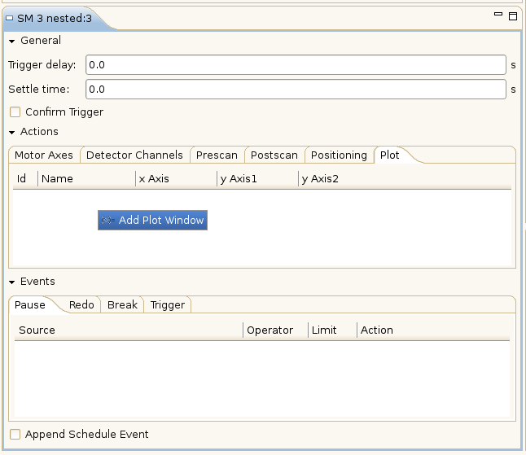

Add a Plot Window
To add a plot window to a scan module follow these steps:
- Select the scan module where the plot window should be added to by (left-)clicking on it.

- In the Scan Module View select the plot tab, right click in the white space and click „Add Plot Window”.
 - Now you can edit the properties of the plot window in the Plot Window View (bottom right).